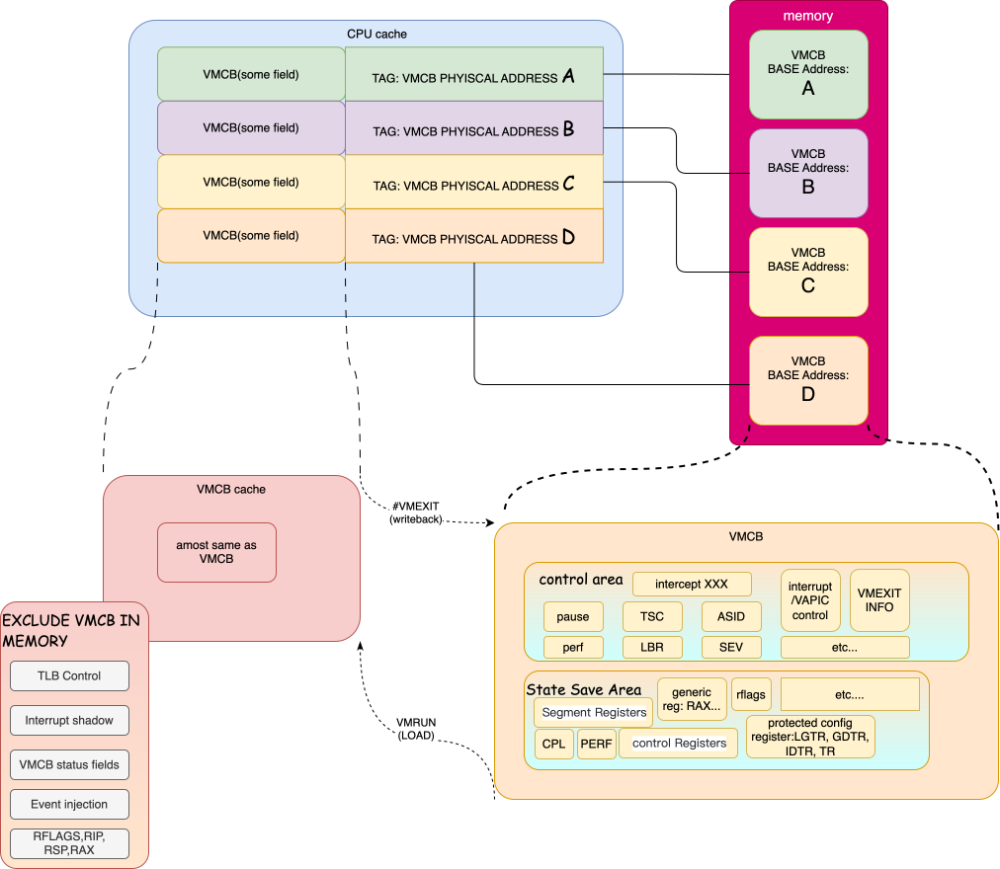
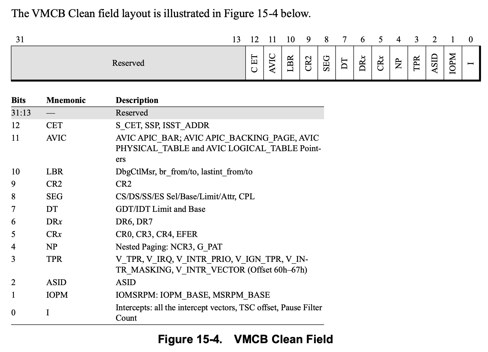
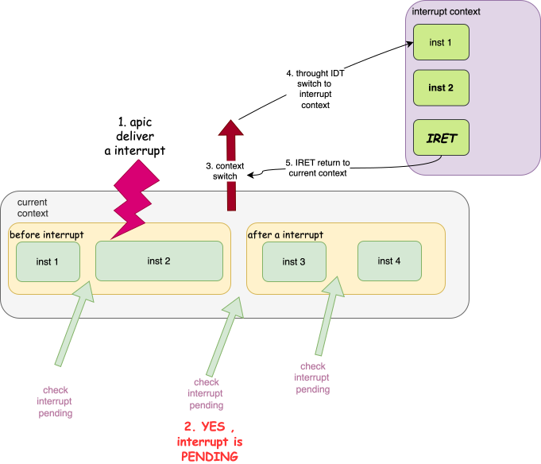
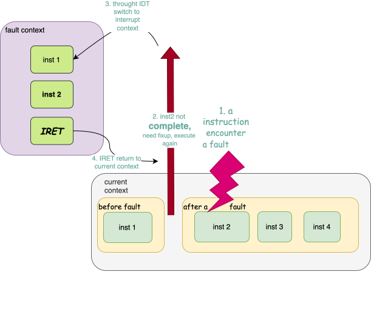

svm
文章主要来自AMD sdm `15 Secure Virtual Machine
overflow
SVM 提供了由硬件扩展，旨在实现高效, 经济的虚拟机系统。其功能主要分为 virtualization support 和 security support, 概述如下:
- virtualization support
- memory
- guest/host tagged TLB
- External (DMA) access protection for memory
- Nested paging support
- interrupt virtualization
- Intercepting physical interrupt delivery
- virtual interrupts
- Sharing a physical APIC
- Direct interrupt delivery
- CPU virtualization: guest mode && host mode
- switch
- intercept: ability to intercept selected instructions or events· in the guest
- memory
- securitry support
虚拟化扩展指令
- VMRUN
- VMLOAD
- VMSAVE
- CLGI
- VMMCALL
- INVLPGA
执行需要EFER.SVME 被设置为1, 否则执行这些指令将会产生#UD.
另外
- SKINIT
- STGI
指令执行需要
- EFER.SVME 设置为1
- CPUID Fn8000_0001_ECX[SKINIT] 设置为1
否则执行也会产生#UD
在使能SVM之前，如那件需要如下判断SVM是否能被enable.
1
2
3
4
5
6
7
8
9
10
11
12
if (CPUID Fn8000_0001_ECX[SVM] == 0)
return SVM_NOT_AVAIL;
if (VM_CR.SVMDIS == 0)
return SVM_ALLOWED;
if (CPUID Fn8000_000A_EDX[SVML]==0)
return SVM_DISABLED_AT_BIOS_NOT_UNLOCKABLE
// the user must change a platform firmware setting to enable SVM
else
return SVM_DISABLED_WITH_KEY;
// SVMLock may be unlockable; consult platform firmware or TPM to obtain the key.
VMCB
VMCB中即包括了guest上下文，也包括了用于vmm控制guest的配置信息。主要包括:
- 在guest 中要拦截的一些列的instruction or event
- 各种控制位用于指定guest 的execution envirionment，或指示在运行来宾代码之前需要采 取的特殊操作，以及
- guest processor state (例如, 控制寄存器)
VMCB位于内存中, 某些指令和事件会根据vmcb构建guest上下文，或者将guest上下文writeback回vmcb，完成host和 guest之间的切换, 我们下面详细介绍
VMRUN and #VMEXIT
使用VMRUN指令操作数需指定一个VMCB地址, 即rAX, 在VMRUN时, 会从rAX指向的VMCB 内存中，先将当前cpu状态保存下来，然后再将部分字段load到当前CPU的上下文， 将全部cpu 状态load后，就相当于进入guest了。
具体操作是:
- remember VMCB address(rAX) for next #VMEXIT
- save host state ->
VM_HSAVE_PAMSR - load control information
- intercept vector
- TSC offset
- interrupt control
- EVENTINJ field
- ASID
- load guest state
- ES, CS…
- GDTR IDTR
- CRxxx
此时，cpu context 已经是guest
- execute command store in TLB_CONTROL
1 2 3 4
IF (EVENTINJ.V) cause exception/interrupt in guest else jump to first guest instruction
上面的某些信息，在这个过程中会替换掉当前host的上下文, 如GDTR. 但是某些字段是 不属于cpu context的, 例如
control information, 这部分就相当于专门的cpu cache。 目的是:
vmcb中的这些字段在guest中可能会频繁访问，例如, intercept INTR control field, 在每次外部中断到来时, 都会使用该字段。为了加速, 虚拟机运行时的性能，在VMRUN指令 执行时，会将VMCB中的大部分字段，加载到cpu内部的cache中.
如下图:

从上图可知:
- VMCB的cache以该VMCB在内存中的base physical address为tag, 在VMRUN时，会将 VMCB load到memory
- 当intecept 某些events时，可能会从触发
#VMEXIT. 这时，会将VMCB cache writeback 到memory - VMCB cache，并不是cache了 VMCB 全部, 包括:
- interrupt shadow
- Event injection: 事件注入相关信息，在
VMRUN时, 获取一次，并在进入guest之前，注入该event, 在之后guest运行过程中，不再需要这个字段, 所以这个信息没有必要cache - TLB Control: 和上同理
- RFLAGS, RIP, RSP, RAX: CPU: CPU 上下文信息, 这些信息在#VMEXIT后，很可能会改变，并且 这些字段是load 到cpu context的。所以没有必要cache.(猜测)
另外, 在VMRUN和#VMEXIT时，需要save，load host state。这些CPU也做了相应的 类似于VMCB的cache。手册中的描述如下:
Processor implementations may store only part or none of host state in the memory area pointed to by VM_HSAVE_PA MSR and may store some or all host state in hidden on-chip memory. Different implementations may choose to save the hidden parts of the host’s segment registers as well as the selectors. For these reasons, software must not rely on the format or contents of the host state save area, nor attempt to change host state by modifying the contents of the host save area.
大致的意思是, 处理器可能会store 部分或者不会store 由 VM_HSAVE_PA MSR 指向的 host state, 并可能将部分或全部主机状态store 在 on-chip memory中。不同的实现 可能会选择保存主机段寄存器的隐藏部分以及选择器。因此，软件不能依赖于主机状态 保存区域的格式或内容，也不能通过修改主机保存区域的内容来尝试更改主机状态。
所以，guest host上下文切换，主要涉及 VMCB -- VM_HSAVE_PA 中包含的上下文 内容的切换, 但是某些event只需要简单处理后，又继续返回guest执行。这样就没有 必要切换一些寄存器。（使用guest的即可)
另外在大部分的场景下，在多次VMRUN, #VMEXIT期间, VMCB中的很多字段并没有改变。 为了加速guest, host的切换. SVM支持控制某些字段在VMRUN时才会load.
上面提到的两种情况，amd通过如下方式解决:
- VMCB clean Bits
- VMLOAD, VMSAVE
VMCB Clean Bits
该功能在amd spec
15.15 VMCB State Caching章节中有详细讲述
首先该功能在VMCB 新增了 VMCB Clean field(VMCB offset 0C0h, bit 31:0), 这些bit决定了在VMRUN时，需要load哪些register. 每个bit可能代表某个或 某组寄存器。该bit设置为0时，需要处理器去load VMCB到cache。 但是这些bit是hint, 因此processor可能会忽略掉厚谢被设置为1的bits，无条件 的从VMCB 中load。另外，当clear bits 设置为0时，总是需要load。
所以这样就需要vmm判断，在上次 #VMEXIT到本次VMRUN之间，有哪些字段改变了. 从而使用VMCB clean field完成高效的guest/host切换。
有一些场景需要VMCB clear field都被设置为0, 如下:
- 该guest第一次 run
- guest 被切到另一个cpu上运行
- hypervisor将 guest VMCB 切到另一个物理地址
上面提到过，VMCB cache时根据VMCB的physical address 作为tag去match. 当CPU 发现VMRUN指定的 VMCB physical address 和 cache中所有的 条目都不匹配时， 会将VMCB clean field 都当作zero.
VMCB Clean field 具体字段如下:

VMLOAD, VMCLEAN
在VMRUN包括#VMEXIT过程中，即使VMCB Clean Bits都设置为0, cpu也不会 将所有的字段全部load/save, 需要通过额外的指令
- VMLOAD
- VMSAVE
这些字段包括:
- FS, GS, TR, LDTR (including all hidden state)
- KernelGsBase
- STAR, LSTAR, CSTAR, SFMASK
- SYSENTER_CS, SYSENTER_ESP, SYSENTER_EIP
这样做的目的是，为了快速的完成guest和host的切换, 来处理一些简单的event, 虽然在实际的KVM代码中，并没有这样做。
NOTE
可以参照SVM的代码,
svm_vcpu_enter_exit中关于vmload和vmsave 指令的使用.kvm选择在
VMRUN之前，无条件的执行VMLOAD guest vmcb，在#VMEXIT时，VMSAVE guest vmcb,VMLOAD host save area2但是手册中并未找到关于
MSR_VM_HSAVE_PA指向的host state的格式。所以, 这里猜测host state格式和vmcb相同.
intercept
关于cpu虚拟化中，比重最大的部分，就是intercept。host通过 intercept guest中 的敏感行为，trap到host，然后由vmm进行emulate后，再次进入guest。
intercept operation主要分为两类:
- Exception intercept:
- instruction intercept:
当发生了intercept时，需要将VMEXIT的reasion，还有一些其他的信息 传递到host, 这些信息被写在:
- EXITCODE: intercept的原因
- EXITINTINFO: 当guest想要使用 IDT deliver interrupt or exception 时发生了intercept，这时需要有一个地方保存着该信息， 以便处理完该event之后，再次向guest注入 interrupt/exception
- EXITINFO1, EXITINFO2: 提供了某些intercept的额外信息
intercept就意味着需要保存guest state，并切换到host state，那该从哪个点保存 guest state呢?
这个和host上触发exception or interrupt的需求是一样的，都需要保存一个上下文 切换到另一个上下文, 而host上触发excp/intr 是发生在指令边界处. (在 interrupt and exception context switch 章节中介绍了host触发excp/intr的逻辑)
而 intercept 的逻辑也是这样，也是在指令边际处来切换. 但是其和host 上切换逻辑 不同的是:
| 不同点 | host | guest intercept |
|---|---|---|
| 是否切换 | 根据当前cpu的状态 | 结合cpu状态以及vmcb control field |
| 切换信息量 | fewer register and non-visible state | more register and non-visible state |
| 切换信息方式 | stack->cpu | cache – vmcb – host state |
所以综合来看，intercept的整体要复杂, 其代价更大, 所以现在虚拟化主要的优化方式， 就是在硬件中emulate，减少vmm intercept.
关于intercept的细节有很多。不同的intercept event的触发条件，相关control field， 以及EXITCODE/EXITINFO 均不同，我们不再这里描述。
memory
内存虚拟化我们这里主要关注两部分
- nested page Table
- TLB
参考链接
附录
interrupt and exception context switch
interrupt, fault exception 和trap exception 其上下文切换都是发生在指令边界处， 这样做的好处，是明确规定了上下文切换的点，让指令执行原子化，方便软件进行处理.
但是三者的机制不太相同。分别来看:
interrupt

当APIC发出一个interrupt后(我们这里以maskable interrupt为例), cpu会在指令边际处检查 是否有pending的中断, 会根据当前的cpu状态评估(interrupt window)，要不要接收该interrupt, 如果接收, 就向apic 要详细的中断信息，然后通过IDT进行上下文切换（当然不仅仅是IDT，还有 其他desc中的信息，这里不赘述)
fault

fault一般是指令执行过程中，发现该指令执行的有问题，例如，#PF是在寻址过程中，发现 page table walk 出现了问题，但是此时该指令还未执行完成，所以需要将cpu恢复到该指令 执行之前的上下文，然后，deliver一个exception
trap

trap的处理十分简单，如上图所示，trap的触发是通过trap指令，该指令的作用就是在该指令 之后的位置，挖一个坑，该坑通往处理该trap的异常处理程序。当异常处理程序返回时，执行 trap指令的下一条指令。